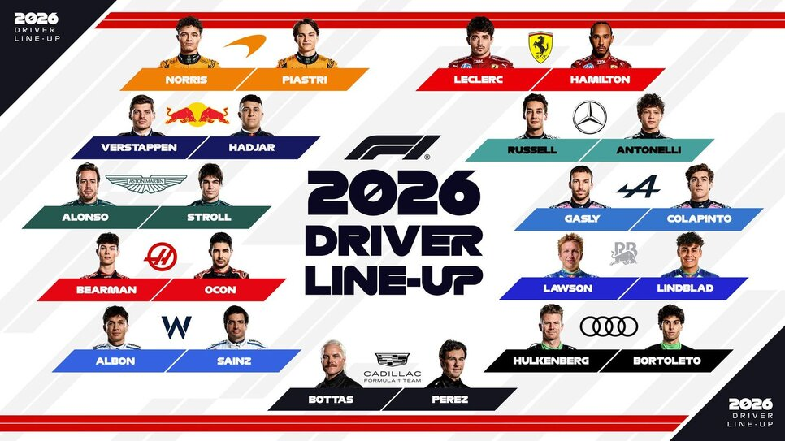

Команды Формулы-1

Топ-команды по количеству побед в Кубке Конструкторов
| Команда | Страна | Кубков Конструкторов | Последний титул |
|---|---|---|---|
| Ferrari | Италия | 16 | 2008 |
| McLaren | Великобритания | 10 | 2025 |
| Williams | Великобритания | 9 | 1997 |
| Mercedes | Германия | 8 | 2021 |
| Red Bull | Австрия | 6 | 2023 |
Интересные факты о командах
- Ferrari — единственная команда, выступавшая во всех сезонах F1.
- McLaren была основана новозеландцем Брюсом МакЛареном в 1963 году.
- Команда Red Bull известна своими феноменально быстрыми пит-стопами.